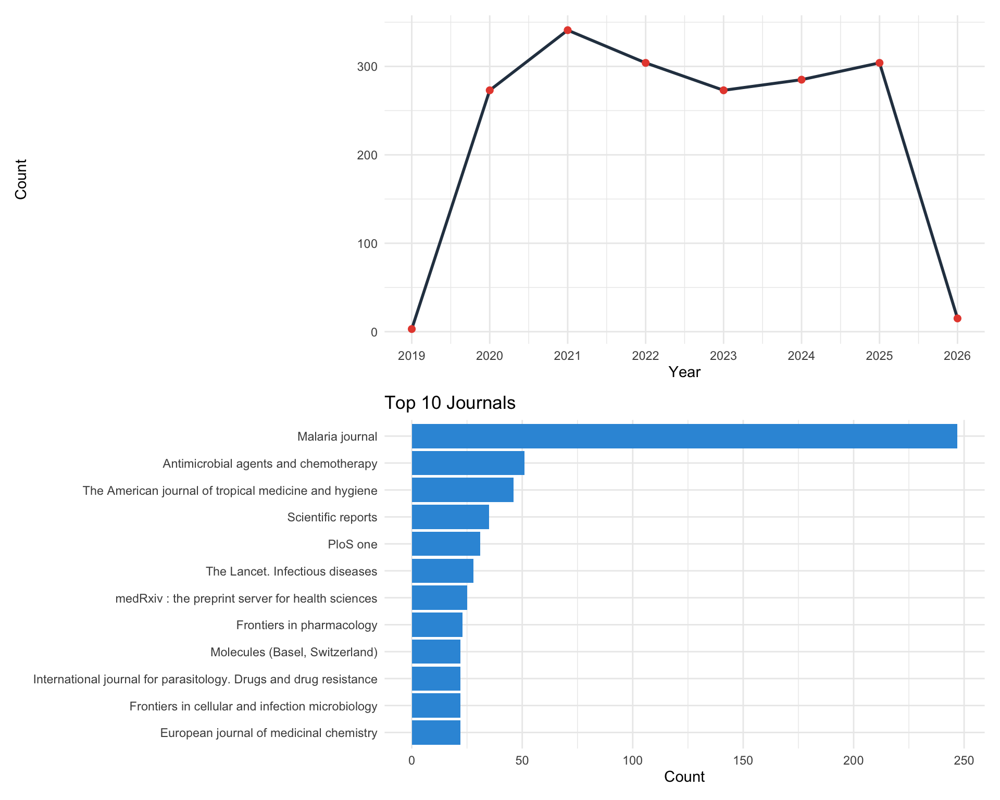
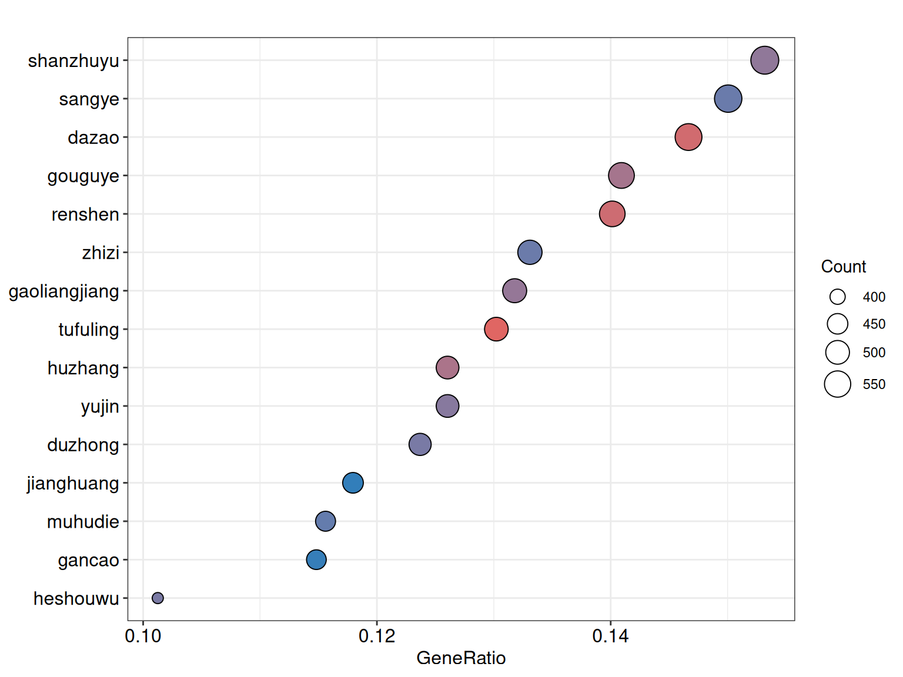
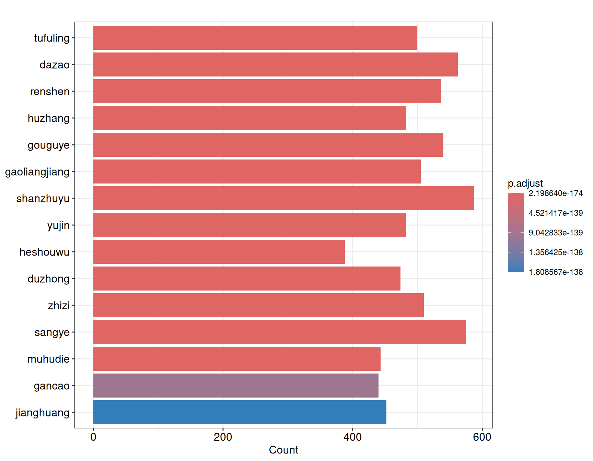

Chapter 2 Pre-analysis
Prior to constructing pharmacological networks, a preliminary literature survey and target-level screening are often necessary to define the research scope. TCMDATA offers two utilities for this purpose: get_pubmed_data() for mining PubMed literature, and herb_enricher() for identifying candidate herbs through over-representation analysis.
2.1 PubMed literature mining
get_pubmed_data() queries the NCBI PubMed database via E-utilities[1] and retrieves publications matching a given TCM–disease keyword pair within a specified time frame. The function returns an S3 object of class tcm_pubmed, containing the literature records, annual publication counts, and the query string.
A valid email address is required by NCBI for API access.
library(TCMDATA)
result <- get_pubmed_data(
tcm_name = "Artemisinin",
disease_name = "Malaria",
year_range = c(2020, 2025),
retmax = 2000,
email = "your_email@example.com"
)If year_range is not specified, the function defaults to the most recent 10 years. The retmax argument controls the maximum number of records retrieved; setting retmax = "all" fetches all matching records, which is recommended when accurate annual trend statistics are needed.
2.1.1 Visualization
The plot() method provides two chart types. type = "trend" produces an annual publication count line chart, while type = "journal" shows a bar chart of the top N journals ranked by article count.
library(aplot)
p_trend <- plot(result, type = "trend")
p_journal <- plot(result, type = "journal", N = 10)
plot_list(p_trend, p_journal, ncol = 1)
2.1.2 Exporting results
get_pubmed_table() extracts the literature records sorted by publication year in descending order. An optional file argument writes the table directly to a CSV file.
PMID Title Year Journal
1 41625564 Plasmodium vivax elimination from India may need t 2026 IJID regions
2 41531728 HMOX1 drives dihydroartemisinin-sensitized ferropt 2026 iScience
3 41476774 Heme as activator and target for artemisinin: Towa 2026 Biochemistry and biophysi...
4 41453501 Recrudescence of Plasmodium falciparum malaria imp 2026 Travel medicine and infec...
5 41447926 Three new single nucleotide polymorphisms identifi 2026 Diagnostic microbiology a...
6 41416883 Highlights of Medicinal Chemistry Optimization Str 2026 Journal of medicinal chem...2.2 Herb enrichment analysis
A central question in TCM network pharmacology is which herbs possess targets that significantly overlap with a given disease gene set. herb_enricher() addresses this through Over-Representation Analysis (ORA), using the herb–target relationships curated in TCMDATA as the annotation background. Internally, it wraps clusterProfiler::enricher()[2].
The logic is analogous to conventional GO or KEGG enrichment: each herb defines a gene set composed of its known targets, and a Fisher’s exact test evaluates whether the overlap between the query genes and each herb’s targets exceeds what is expected by chance.
2.2.1 Example: Diabetic Nephropathy
TCMDATA includes dn_gcds, a character vector of Diabetic Nephropathy (DN)-associated genes sourced from GeneCards. We use these as the query gene set to identify enriched herbs.
#> [1] "INS" "ACE" "GCK" "HNF1A" "HNF1B" "KCNJ11"Then, we can perform ORA analysis using herb_enricher():
#> ID Description GeneRatio BgRatio RichFactor
#> tufuling tufuling tufuling 499/3832 664/15889 0.7515060
#> dazao dazao dazao 562/3832 812/15889 0.6921182
#> renshen renshen renshen 537/3832 760/15889 0.7065789
#> huzhang huzhang huzhang 483/3832 665/15889 0.7263158
#> gouguye gouguye gouguye 540/3832 795/15889 0.6792453
#> gaoliangjiang gaoliangjiang gaoliangjiang 505/3832 726/15889 0.6955923
#> FoldEnrichment zScore pvalue p.adjust qvalue
#> tufuling 3.116044 31.40203 1.449334e-177 2.198640e-174 1.246533e-176
#> dazao 2.869798 30.83493 2.427516e-172 1.841271e-169 1.043920e-171
#> renshen 2.929758 30.73493 7.461554e-171 3.773059e-168 2.139160e-170
#> huzhang 3.011595 29.87547 4.752576e-161 1.802415e-158 1.021890e-160
#> gouguye 2.816422 29.62278 2.190176e-159 6.644994e-157 3.767421e-159
#> gaoliangjiang 2.884203 29.29754 1.747032e-155 4.417080e-153 2.504291e-155
#> geneID
#> tufuling CDK5/DNAH8/CYCS/CDH5/FOSB/OGG1/UTRN/CREB1/ABL1/PKD1/STAT1/AQP1/HIF1A/KDM1A/KCNN4/NLRP3/TNF/SMAD3/HNRNPA1/GAA/LDHA/FASLG/CTBP1/SCN5A/SRD5A1/PLG/GDNF/IL5/NPHS2/CCND2/PLA2G4A/CYP1A1/MYC/PIK3CG/THBS1/MIR183/SRC/SQSTM1/UBE3A/GSK3B/ATF4/CEBPB/SIRT7/TGFB2/PTEN/IRF1/CASP8/SLC2A1/SMAD4/SLC5A2/CD36/CD86/PTPN1/MMP1/CYP1A2/DNAJC5/KIT/MIR34A/INSR/BCL2L1/CS/ENO2/PARP1/YWHAZ/ZMPSTE24/IL6/SERPINE1/GADD45A/PPARA/TLR4/CAMP/TP53/PLA2G1B/SNAI2/ELANE/CDK6/ABCB1/KNG1/LPCAT2/STAT5A/RAF1/GAP43/MITF/CYBB/FXN/IL1B/APOB/SYK/CD80/CAT/FLT1/PRDX1/CYP2C9/EGR1/AGT/CYP3A4/PIK3CA/ALB/CDKN1A/HNF4G/EGF/APP/PPARG/LTC4S/MMP2/CTSD/ALPP/CD33/ATM/AKT1/CD38/CFLAR/HGF/GSTP1/INS/ITGA5/CX3CL1/CAV1/BIRC2/SLC2A2/LMNA/SMAD1/AQP5/IGFBP3/BECN1/KCNQ1/KCNMA1/VIM/NPY/HDAC6/NR1H4/MTOR/KDR/MME/APOM/TOP2A/PRKACA/PIK3CB/MMP10/TNFSF11/HDAC9/ABCA1/IL10/JAK2/HAMP/RPS6KB1/KLF4/ADRB2/BMAL1/ICAM1/LYN/ABCG8/BRCA2/FABP5/SLC5A1/GPX4/HMGCR/EIF2S1/NR1H2/MIR196B/KL/HMGB1/TWIST1/NR1I3/ABCG5/PTGDS/NOTCH1/PRSS1/TNFSF10/KEAP1/MMP3/VEGFA/CCL3/PRKCD/CES1/DES/CCR2/XBP1/IL4/CASP3/IL2/CTNNB1/TXN2/SPP1/ITGB1/EDN1/CALCA/NCF1/SLPI/LALBA/CSF2/NPPB/IDH1/ABCC2/BRCA1/MIR15A/STAT5B/SOAT1/UCP2/VDR/VAV1/CD274/ESR2/PTPN11/PSEN1/PTX3/GLUL/TGFB1/TBK1/COL1A1/ADIPOR1/PON1/AKT3/CYBA/MIR145/PPARD/CDK2/CPT1A/GSS/SAA1/ABCG1/MAPK8/ACTG2/SNAI1/ELK1/CCL2/FGF2/S1PR1/AR/UHRF1/XDH/BMP2/RYR2/CSF3/CDK1/FAS/EIF2AK3/APAF1/LOX/TNFRSF10B/MAP3K5/IFNG/MAP1LC3A/NR3C2/PARK7/NQO1/BTK/ENTPD5/F3/NFE2L2/MAP2K2/PLA2G7/ACTA2/SPHK1/MMP9/NOS2/GJA1/GCLM/SNCA/NDUFV2/ERBB2/TRPA1/PTK2/GCLC/GSR/MCL1/PDLIM3/CDH1/CHUK/NFKBIA/SGK1/ERBB3/FOXD3/BDNF/EIF4EBP1/MIR200A/NTRK2/HSP90AA1/PDX1/WNT1/BAD/NPHS1/LAMP1/ZEB1/BAX/PTGS1/UCP1/SIRT5/ODC1/CUL5/MAPK9/MAP2K1/CYP2C8/MPO/XIAP/TJP1/IRS1/HSPA5/NPC1/POMC/PRKAB1/H2AX/CYP2E1/FOSL1/RB1/AKT2/CRP/SUCNR1/STAT3/GCG/TRAF2/ACE2/NOX4/PTGS2/FABP1/CYP7A1/AHR/TCF4/TTR/TXN/MIR371A/CDK4/MTTP/AGTR1/ITGAV/IL1A/RHO/LTA4H/SIRT1/MAPK14/OLR1/PEA15/CCR6/STAT6/MIR21/SHH/PFN1/TYR/PCSK9/KHK/MALAT1/LCP1/PECAM1/TGM2/ADIPOQ/ALPL/CDH2/FOXC2/CASP9/CYP1B1/NOX1/CYP2C19/HMOX1/FOXO1/CCNA2/ESRRA/ACHE/IGF1/FOXO3/MAPK3/SIRT3/SCARB1/SIRT6/SFN/SELE/SKP2/HSD11B2/CCK/LGALS1/NFATC1/NPPA/CCND1/PNPLA2/SULT1A1/VCAM1/DNM1L/MLXIPL/ELN/PDCD1/IL17A/LCN2/PLAT/ABCC1/CTSK/ABCG2/NOS3/PRKAA2/TIGAR/HOTAIR/BMI1/APEX1/COL11A2/BACE1/CRK/ADIPOR2/VTN/JUN/ATF6/PIK3R1/BSG/MIRLET7I/PKD2/NR1I2/PPARGC1A/EGFR/SREBF1/SMAD2/RUNX2/PRKCA/CCNB1/CCL20/MECP2/BCHE/RYR1/PIK3CD/SOD1/GCK/TNFRSF11B/MIR155/CCL5/P2RX4/CXCL8/APOE/G6PD/JAK1/CD40LG/SELP/ORAI1/PTK2B/PRKD1/BTRC/TRAF6/CXCL10/ESR1/PLAU/PKM/SOD2/LRP5/DNMT1/HSD11B1/CDC42/ACE/SPARC/FOS/CD28/AQP3/CEBPA/CYP21A2/GLP1R/UCP3/SLC16A1/CETP/PRKCB/BGLAP/MDM2/E2F1/CDKN1B/NOS1/GLI1/MIR148A/IDO1/CDKN2A/ATG5/NUP62/NR1H3/TLR2/HSPA1B/RELA/YARS2/FASN/BIRC5/MAPK1/MIR18A/PCNA/GSTM1/GLO1/NGF/DDIT3/F2/MYD88/BCL2A1/KCNJ11/SLC2A4/HSPB1/COMT/SIGMAR1/LDLR/HSF1/LEP/RASA1/TFAM/CYP19A1/CDK7/TXNIP/NFKB1/HSPA4/BCL2/TNFRSF1A/GPX1
#> dazao ALDH2/IGF1R/TNFRSF10A/MET/MGAM/CYCS/HULC/CCR7/NR2C2/CREB1/TG/ABL1/SMO/CDH11/STAT1/HIF1A/KDM1A/NLRP3/TNF/SERPINA1/SMAD3/FOXP3/HNRNPA1/GAA/FASLG/CD9/HDAC1/PLG/SPI1/HNF4A/FCER2/IL5/CCND2/DHFR/ERN1/CYP1A1/MYC/PLA2G2A/ATP6AP2/PIK3CG/TIMP1/THBS1/SRC/SQSTM1/PDK4/GSK3B/ATF4/IL2RA/MIR22/CEBPB/TGFB2/PTEN/IRF1/CASP8/SLC2A1/RAD51/CD36/GLRA3/CD86/PTPN1/MMP1/CYP1A2/DNAJC5/KIT/GBA2/HSD3B2/CYP2D6/IL18/MT2A/ASS1/INSR/BCL2L1/RET/PARP1/YWHAZ/ALAS1/DAO/IL6/EZR/SERPINE1/GADD45A/ADA/PPARA/TLR4/CAMP/TP53/SNAI2/CDK6/NANOG/ABCB1/KNG1/LPCAT2/STAT5A/RAF1/GAP43/CYBB/IL1B/MFGE8/APOB/FTH1/CD34/SYK/PRKN/CD80/CAT/CXCL1/CYP2C9/TRPV1/AKR1B1/HP/EGR1/AGT/CXCR4/CYP3A4/PIK3CA/TFEB/SOX9/ALB/CDKN1A/CCNE1/PRKCZ/DRD3/HNF4G/EGF/TCF7L2/APP/GM2A/CCN2/DRD2/PPARG/TNFRSF11A/MMP2/ADH4/CTSD/PRF1/CD33/PI4KB/AKT1/CFLAR/HGF/GSTP1/INS/PLK1/CAV1/BIRC2/SLC2A2/HPRT1/PDGFRB/GATM/IGFBP3/BECN1/VIM/SLC22A2/FUS/HDAC6/NR1H4/MTOR/KDR/APOM/PMAIP1/TOP2A/PIK3CB/SLC19A3/MMP10/TNFSF11/CASP7/IMPDH1/ABCA1/IL10/JAK2/MKI67/P4HB/GHR/ICAM1/LYN/ABCG8/LTF/FABP5/SLC5A1/TLR9/HTR2A/SST/SLC9A3/HMGCR/RIPK1/IL15/EIF2S1/NR1H2/MVP/PTPN6/HMGB1/TWIST1/JAM3/NR1I3/RBP4/CD55/VARS1/IGFBP1/CTLA4/ABCG5/CAMKK2/NOTCH1/ANGPTL4/MAPK10/PRSS1/ACTA1/CYP2J2/MMP3/RXRA/AGER/VEGFA/IGHE/APOA1/PRKCD/IL21/XBP1/IL4/CASP3/IL2/AGXT/CYP11A1/MIR330/CTNNB1/SPP1/ECE1/EDN1/CALCA/NCF1/SLPI/LALBA/STAT4/S100A1/CSF2/NPPB/VASP/IDH1/ABCC2/BRCA1/REN/GNMT/MIR15A/STAT5B/SOAT1/UCP2/VDR/CALR/CD274/ESR2/PTPN11/ALPI/PTX3/SMAD7/TGFB1/TBK1/COL1A1/JAK3/PON1/PPARD/CDK2/CPT1A/ARG1/GSS/ABCG1/MAPK8/MB/ELK1/ID1/CCL2/CYP27B1/FGF2/LPL/AR/MIR16-1/CTSB/KLK3/XDH/BCR/UCHL1/BMP2/CSF3/CDK1/FAS/EIF2AK3/TNFRSF10B/MAP3K5/IFNG/NQO1/VWF/F3/NEU1/IL9/PTH/NFE2L2/MAP2K2/POU2F2/PLA2G7/ACTA2/MMP9/ILK/HAVCR1/PROCR/EZH2/VLDLR/NOS2/GJA1/SP1/MSTN/SNCA/NDUFV2/EPHX2/ERBB2/MIR373/TGFBR1/PTK2/GSK3A/MCL1/CDH1/FBXW7/CHUK/NFKBIA/SGK1/ERBB3/IKBKB/BDNF/TNFSF13B/NTRK2/SCNN1G/HSP90AA1/PDX1/BAD/PPIA/LAMP1/BARD1/DARS2/IL13/BAX/ULK1/PTGS1/SLC22A3/UCP1/SLC15A1/SLC22A1/ODC1/MAPK9/MAP2K1/CYP2C8/MPO/XIAP/TJP1/IRS1/HSPA5/ATP1A1/NARS2/POMC/PRKAB1/H2AX/FN1/FZD1/CYP2E1/FOSL1/RB1/CRP/STAT3/YY1/GCG/ACE2/NOX4/PTGS2/FABP1/AHR/AXL/TCF4/TTR/TXN/MIR93/CDK4/MTTP/IL1A/RHO/BRAF/SIRT1/CA3/MAPK14/OLR1/RICTOR/CCR6/CD44/STAT6/MIR21/ITGAM/TYR/KHK/C8G/FGF7/PECAM1/PRL/ADIPOQ/NTRK1/GOT2/CASP9/FDXR/BBC3/BCL2L11/CYP1B1/CYP2C19/HMOX1/FOXO1/TRIM63/ACHE/IGF1/DDR1/FOXO3/MAPK3/GSTA1/SCARB1/SFN/SELE/CCK/LGALS1/MIR203A/LRRK2/RIT1/CD68/NFATC1/NPPA/CLU/CCND1/ADAM17/AOX1/VCAM1/DNM1L/S100A8/MLXIPL/DNMT3B/ETS1/IL17A/LCN2/PLAT/ABCC1/WT1/ABCG2/NOS3/CATSPER1/PRKAA2/COL11A2/DHCR7/CCND3/BACE1/SOX2/RHOA/VTN/CD14/LYZ/EP300/JUN/NR1I2/PPARGC1A/EGFR/SREBF1/SMAD2/RUNX2/PRKCA/TKT/PIAS1/CCNB1/MECP2/BCHE/CYP24A1/PIK3CD/SOD1/GCK/TNFRSF11B/DLK1/PCK1/MIR155/ANXA5/CHAT/P2RX4/TGFB3/CXCL8/APOE/IL7/AREG/JAK1/AGTR2/GAST/POLG/CD40LG/SELP/PTK2B/DRD4/CXCL10/ESR1/DYSF/CASR/PLAU/SOD2/HSD3B1/DRD1/NR3C1/DNMT1/HSD11B1/ACE/FOS/CD28/AQP3/CEBPA/CYP21A2/ALAS2/GLP1R/UCP3/SLC16A1/CETP/DDR2/DUOX2/PRKCB/MMP14/MDM2/E2F1/CDKN1B/BAP1/ATF2/GLI1/CSF1R/CDKN2A/EFNB2/TERT/NR1H3/CX3CR1/TLR2/RELA/FASN/KRAS/BIRC5/PRDX6/MAPK1/CASP1/PCNA/RIPK3/GSTM1/NGF/DDIT3/F2/PTCH1/MYD88/SLC2A4/HSPB1/FLT3/COMT/ANGPT1/CD40/SIGMAR1/GFAP/LDLR/HSF1/LEP/TFAM/CYP19A1/TXNIP/NFKB1/HSPA4/BCL2
#> renshen ALDH2/IGF1R/CDK5/REG1A/ALOX5/DNAH8/HULC/CDH5/CCR7/FOSB/OGG1/UTRN/TG/ABL1/SMO/STAT1/HIF1A/KCNN4/NLRP3/TNF/CA4/FOXP3/P2RX7/SCNN1A/GAA/CTBP1/SCN5A/SRD5A1/RNASE3/PLG/NPR3/MBD2/GDNF/IL5/NPHS2/CCND2/PLA2G4A/TJP2/CYP1A1/MYC/PIK3CG/THBS1/MIR183/SRC/SQSTM1/GSK3B/IL2RA/SIRT7/TGFB2/PTEN/CASP8/MIRLET7B/SLC2A1/SMAD4/SLC12A2/CD36/CD86/ITIH4/PTPN1/MMP1/CYP1A2/KIT/TRPV4/BMPR2/BCL2L1/CS/PARP1/YWHAZ/MIR30A/ZMPSTE24/IL6/SERPINE1/GADD45A/ADA/PPARA/TLR4/CAMP/TP53/PLA2G1B/SNAI2/CDK6/ABCB1/KNG1/STAT5A/GAP43/CYBB/FXN/FH/IL1B/APOB/FTH1/SYK/CD80/CAT/MIR663A/FLT1/CYP2C9/APOD/TRPV1/AKR1B1/HP/EGR1/TPO/AGT/CA2/CXCR4/CYP3A4/PIK3CA/ALB/CDKN1A/DRD3/HNF4G/APP/DRD2/PPARG/LTC4S/MMP2/ALPP/CD33/ATM/AKT1/CFLAR/HGF/INS/CX3CL1/BIRC2/SLC2A2/LMNA/POLI/SFTPB/ACACB/ACACA/IGFBP3/KCNQ1/KCNMA1/VIM/NPY/HDAC6/NR1H4/MTOR/KDR/APOM/IGF2/TOP2A/PRKACA/PIK3CB/MMP10/TNFSF11/HDAC9/ABCA1/IL10/ADRA2A/JAK2/GLIPR2/TNFRSF4/HAMP/RPS6KB1/KLF4/ADRB2/BMAL1/ICAM1/LYN/ABCG8/BRCA2/FABP5/SLC5A1/TLR9/HTR2A/GPX4/HMGCR/COL1A2/GLB1/ADORA1/EIF2S1/TLR8/NR1H2/MIR196B/KL/HMGB1/TWIST1/NR1I3/RBP4/CD55/GUSB/ABCG5/CAMKK2/NOTCH1/PRSS1/ACTA1/TNFSF10/KEAP1/MMP3/RXRA/RPS6KA3/VEGFA/CCL3/APOA1/PRKCD/SERPINF1/CES1/DES/CCR2/XBP1/IL4/CASP3/IL2/FGF23/CYP11A1/IFNB1/CTNNB1/TXN2/SPP1/ITGB1/EDN1/PGR/CALCA/TLR3/LALBA/NPPB/IDH1/ABCC2/BRCA1/REN/MIR15A/STAT5B/SOAT1/IL12B/UCP2/VDR/VAV1/CALR/ESR2/CD209/PTPN11/PSEN1/GLUL/TGFB1/COL1A1/RETN/ADIPOR1/PON1/PPARD/CDK2/CPT1A/ARG1/GSS/SAA1/ABCG1/MAPK8/ACTG2/SNAI1/HSP90AB1/CCL2/CYP27B1/FGF2/S1PR1/LPL/MCCC2/AR/F2RL1/UHRF1/SMN2/XDH/TNFRSF1B/BMP2/CDK1/TYMS/FAS/EIF2AK3/APAF1/LOX/MAP3K5/IFNG/AIFM1/PARK7/NQO1/BTK/VWF/ENTPD5/F3/SOCS3/PTH/NFE2L2/PLA2G7/ACTA2/SPHK1/MMP9/GLA/TEK/PPP2CA/NOS2/GJA1/SNCA/ERBB2/CLDN1/EPHA2/PTK2/GCLC/GSK3A/MCL1/CDH1/NFKBIA/SGK1/IKBKB/BDNF/EIF4EBP1/NTRK2/HSP90AA1/BMP4/PDX1/WNT1/BAD/NPHS1/MUC1/BID/LAMP1/CXCR1/ZEB1/BAX/PTGS1/UCP1/ODC1/CUL5/MAP2K1/CYP2C8/MPO/XIAP/TJP1/IRS1/HSPA5/NPC1/POMC/PRKAB1/H2AX/FN1/NDUFS3/CYP2E1/AKT2/CRP/SUCNR1/STAT3/GCG/TNNI3/TRAF2/ACE2/NOX4/PTGS2/FABP1/CYP7A1/AHR/PINK1/SLC5A6/TCF4/TTR/FOLH1/TXN/CNR1/CDK4/AGTR1/PLEK/ITGAV/IL1A/RHO/LTA4H/SIRT1/MAPK14/OLR1/CCR6/STAT6/MIR21/SHH/PFN1/TYMP/TYR/C8G/MALAT1/PECAM1/PRL/ADIPOQ/MLKL/CDH2/FOXC2/CASP9/IRAK1/CYP1B1/HMOX1/FOXO1/CCNA2/ESRRA/BIRC3/ACHE/IGF1/FOXO3/MAPK3/SIRT3/SCARB1/TNFRSF13B/TH/SELE/HSD11B2/CCK/MIR203A/HLA-G/RIT1/NPPA/CCND1/VCAM1/DNM1L/ELN/DNMT3B/IL17A/LCN2/ABCC1/ACP1/ABCG2/NOS3/PRKAA2/GPER1/BMI1/APEX1/PC/DHCR7/CKM/ADORA2B/BACE1/TRPC6/SLC2A3/ADIPOR2/CD14/LYZ/JUN/MIR125B1/ATF6/PIK3R1/FOLR1/BSG/NR1I2/PPARGC1A/EGFR/SREBF1/SMAD2/RUNX2/PRKCA/CCL20/BCHE/RYR1/CYP24A1/PIK3CD/SOD1/SESN2/TNFRSF11B/MIR155/CCL5/P2RX4/CXCL8/APOE/G6PD/JAK1/SELP/ORAI1/PRKD1/BTRC/CXCL10/ESR1/DYSF/BAK1/CASR/PKM/SOD2/DRD1/NR3C1/DNMT1/HSD11B1/CDC42/PLD1/ACE/SPARC/FOS/CD28/AQP3/CEBPA/CYP21A2/GLP1R/UCP3/SLC16A1/CETP/MAPT/PRKCB/MDM2/CNR2/NOS1/GLI1/IDO1/APRT/ATG5/NUP62/NR1H3/TLR2/VEGFC/RELA/YARS2/FASN/BIRC5/HPSE/PKLR/MAPK1/MIR18A/RIPK3/GSTM1/GLO1/GAPDH/PTPN2/NGF/DDIT3/BCL2A1/SMN1/KCNJ11/SLC2A4/HSPB1/COMT/CD40/ITPR3/SIGMAR1/HSF1/LEP/RASA1/TFAM/CYP19A1/CXADR/CDK7/TXNIP/NFKB1/HSPA4/BCL2/TNFRSF1A/GPX1/ITGAL
#> huzhang CDK5/MET/DNAH8/MGAM/CYCS/CDH5/SP3/FOSB/FTO/OGG1/UTRN/CREB1/LCK/STAT1/AQP1/HIF1A/KDM1A/KCNN4/NLRP3/TNF/SMAD3/CA4/P2RX7/HNRNPA1/GAA/FASLG/SCN5A/RNASE3/GDNF/IL5/MAN2B1/NPHS2/CCND2/PLA2G4A/DHFR/CYP1A1/MYC/PIK3CG/TIMP1/THBS1/MIR183/SRC/SQSTM1/GSK3B/ATF4/CEBPB/SIRT7/TGFB2/PTEN/IRF1/CASP8/XPO1/SLC2A1/SMAD4/SLC5A2/CD86/PTPN1/MMP1/GSTK1/CYP1A2/DNAJC5/KIT/INSR/BCL2L1/CS/PARP1/ZMPSTE24/IL6/SERPINE1/GADD45A/ADA/PPARA/TLR4/CAMP/TP53/SNAI2/ELANE/CDK6/ABCB1/LPCAT2/STAT5A/RAF1/MITF/CYBB/FXN/EHMT2/FH/IL1B/APOB/SYK/CD80/CAT/FLT1/CXCL1/AKR1B1/EGR1/AGT/CA2/CXCR4/CYP3A4/PIK3CA/ALB/CDKN1A/EGF/PPARG/LTC4S/MMP2/TYK2/CTSD/ALPP/CD33/ATM/AKT1/CFLAR/HGF/GSTP1/INS/CX3CL1/CAV1/CYP2A6/BIRC2/LMNA/HPRT1/AQP5/IGFBP3/KCNQ1/MIR132/KCNMA1/VIM/NPY/NR1H4/MTOR/KDR/APOM/TOP2A/PRKACA/PIK3CB/MMP10/TNFSF11/MIR27A/HDAC9/ABCA1/IL10/JAK2/P4HB/HAMP/RPS6KB1/KLF4/ADRB2/BMAL1/ICAM1/LYN/BRCA2/SLC5A1/GPX4/HMGCR/ADORA1/EIF2S1/MIR196B/KL/HMGB1/TWIST1/NR1I3/NOTCH1/CRHR1/ACTA1/TNFSF10/KEAP1/RPS6KA3/VEGFA/CCL3/APOA1/PRKCD/DES/CCR2/XBP1/IL4/CASP3/IL2/CTNNB1/TXN2/SPP1/ITGB1/EDN1/CALCA/NCF1/SLPI/STAT4/CSF2/ABCC2/BRCA1/MIR15A/UCP2/VDR/VAV1/CD274/ESR2/PTPN11/ALPI/PSEN1/PTX3/GLUL/TGFB1/TBK1/COL1A1/ADIPOR1/PON1/MIR145/ZHX2/CDK2/CPT1A/SAA1/ABCG1/MAPK8/ACTG2/SNAI1/ELK1/CCL2/FGF2/S1PR1/AR/UHRF1/XDH/UCHL1/BMP2/RYR2/CSF3/CDK1/FAS/EIF2AK3/APAF1/LOX/TNFRSF10B/MAP3K5/IFNG/AIFM1/PARK7/NQO1/BTK/ENTPD5/F3/NFE2L2/PLA2G7/ACTA2/SPHK1/MMP9/EPO/GLA/PDCD4/PROCR/EZH2/VRK1/NOS2/GJA1/SP1/SNCA/NDUFV2/EPHX2/ERBB2/PTK2/GCLC/MCL1/PDLIM3/CDH1/CHUK/NFKBIA/SGK1/ERBB3/IKBKB/FOXD3/BDNF/EIF4EBP1/MIR200A/NTRK2/WARS2/HSP90AA1/WNT1/IL33/BAD/NPHS1/BID/LAMP1/BAX/PTGS1/UCP1/ODC1/CUL5/MAP2K1/CYP2C8/MPO/XIAP/TJP1/IRS1/HSPA5/NPC1/PRKAB1/H2AX/FN1/CYP2E1/FOSL1/RB1/AKT2/CRP/STAT3/TRAF2/ACE2/NOX4/PTGS2/FABP1/CYP7A1/AHR/RAC1/TCF4/TTR/TXN/MIR371A/CDK4/AGTR1/ITGAV/IL1A/LTA4H/SIRT1/KDM4D/MAPK14/OLR1/CCR6/STAT6/MIR21/SHH/PFN1/TYR/PCSK9/KHK/C8G/MALAT1/PECAM1/ADIPOQ/ALPL/CDH2/FOXC2/CASP9/CYP1B1/CYP2C19/HMOX1/FOXO1/CCNA2/ESRRA/PTN/ACHE/IGF1/FOXO3/MAPK3/SIRT3/SCARB1/TXNRD1/SELE/CTSG/LGALS1/MIR203A/EDNRA/NFATC1/CCND1/SULT1A1/VCAM1/DNM1L/S100A8/MLXIPL/ELN/IL17A/PLAT/ABCG2/NOS3/PRKAA2/BMI1/APEX1/DHCR7/RELB/BACE1/DNMT3A/ADIPOR2/VTN/JUN/ATF6/PIK3R1/BSG/NR1I2/PPARGC1A/EGFR/SREBF1/SMAD2/RUNX2/PRKCA/CCNB1/CCL20/MECP2/BCHE/PIK3CD/SOD1/GCK/SESN2/MIR155/CCL5/P2RX4/CXCL8/APOE/G6PD/YAP1/JAK1/CD40LG/SELP/ORAI1/PTK2B/FUCA1/PRKD1/CDK9/BTRC/CXCL10/ESR1/PLAU/PKM/SOD2/DNMT1/HSD11B1/CDC42/ACE/SPARC/FOS/CD28/CEBPA/DPP4/CYP21A2/MSR1/GAK/GLP1R/SLC16A1/MAPT/PRKCB/BGLAP/MDM2/FDPS/E2F1/NOS1/GLI1/IDO1/APRT/CDKN2A/ATG5/NUP62/TERT/NR1H3/RELA/YARS2/FASN/KRAS/BIRC5/MAPK1/MIR18A/CASP1/GSTM1/GLO1/NGF/DDIT3/F2/MYD88/BCL2A1/KCNJ11/SLC2A4/HSPB1/FLT3/COMT/LDLR/HSF1/LEP/RASA1/TFAM/CYP19A1/CDK7/TXNIP/NFKB1/HSPA4/BCL2/TNFRSF1A/GPX1
#> gouguye CDK5/DNAH8/MGAM/CYCS/CDH5/SP3/FOSB/FTO/OGG1/UTRN/CREB1/LCK/PTH1R/STAT1/AQP1/HIF1A/KDM1A/KCNN4/NLRP3/TNF/DMP1/SMAD3/CA4/FOXP3/P2RX7/HNRNPA1/SCNN1A/GAA/FASLG/SCN5A/RNASE3/PLG/HNF4A/GDNF/IL5/MAN2B1/NPHS2/CCND2/DHFR/CYP1A1/MYC/PLA2G2A/PIK3CG/THBS1/MIR183/SRC/SQSTM1/GSK3B/ATF4/NEU2/CEBPB/SIRT7/TGFB2/PTEN/IRF1/CASP8/SLC2A1/SMAD4/SLC5A2/CD86/PTPN1/MMP1/CYP1A2/DNAJC5/KIT/BMPR2/INSR/BCL2L1/CS/PARP1/ZMPSTE24/IL6/EZR/SERPINE1/GADD45A/ADA/PPARA/TLR4/CAMP/TP53/SNAI2/ELANE/CDK6/ABCB1/LPCAT2/STAT5A/RAF1/GAP43/CYBB/FXN/EHMT2/FH/IL1B/APOB/SYK/CD80/CAT/FLT1/TRPV1/AKR1B1/EGR1/AGT/CA2/CXCR4/CYP3A4/PIK3CA/ALB/CDKN1A/EGF/GM2A/DRD2/PPARG/LTC4S/MMP2/CTSD/PRF1/ALPP/CD33/ATM/AKT1/CFLAR/HGF/GSTP1/INS/CX3CL1/PLK1/CAV1/BIRC2/SLC2A2/LMNA/AQP5/POLI/IGFBP3/KCNQ1/KCNMA1/VIM/PDE6C/NPY/MTOR/KDR/APOM/PMAIP1/TOP2A/PRKACA/PIK3CB/MMP10/TNFSF11/MIR27A/HDAC9/ABCA1/IL10/JAK2/P4HB/HAMP/RPS6KB1/KLF4/ADRB2/BMAL1/ICAM1/LYN/BRCA2/LTF/FABP5/SLC5A1/GPX4/HMGCR/ADORA1/EIF2S1/MIR196B/PNLIP/KL/ITGA2B/HMGB1/TWIST1/NR1I3/IGFBP1/NOTCH1/PRSS1/ACTA1/TNFSF10/KEAP1/MMP3/RPS6KA3/VEGFA/CCL3/PRKCD/DES/CCR2/XBP1/IL4/CASP3/IL2/CYP11A1/CTNNB1/TXN2/SPP1/ITGB1/EDN1/CALCA/NCF1/SLPI/LALBA/CSF2/RASGRF1/BRCA1/MIR15A/STAT5B/SOAT1/UCP2/VDR/VAV1/CD274/ESR2/PTPN11/PSEN1/PTX3/GLUL/TGFB1/TBK1/COL1A1/ADIPOR1/FSHB/PON1/MIR145/PPARD/CDK2/CPT1A/SAA1/ABCG1/MAPK8/ACTG2/SNAI1/ELK1/CCL2/FGF2/S1PR1/AR/UHRF1/KLK3/XDH/UCHL1/BMP2/RYR2/CSF3/PDE5A/CDK1/FAS/EIF2AK3/APAF1/LOX/TNFRSF10B/MAP3K5/IFNG/AIFM1/PARK7/NQO1/BTK/ENTPD5/F3/NEU1/CACNA1D/NFE2L2/MAP2K2/PLA2G7/ACTA2/SPHK1/MMP9/EPO/ITGB3/GLA/PDCD4/EZH2/VLDLR/NOS2/GJA1/SP1/MSTN/SNCA/NDUFV2/EPHX2/PDE11A/ERBB2/ACP5/PTK2/GCLC/GSK3A/MCL1/PDLIM3/CACNA1C/CDH1/FBXW7/CHUK/NFKBIA/SGK1/ERBB3/IKBKB/FOXD3/BDNF/EIF4EBP1/MIR200A/SLC47A1/NTRK2/WARS2/LHB/HSP90AA1/PDX1/WNT1/IL33/BAD/NPHS1/BID/LAMP1/ZEB1/BAX/PTGS1/UCP1/ODC1/CUL5/MAPK9/MAP2K1/CYP2C8/MPO/XIAP/CGA/TJP1/IRS1/HSPA5/NPC1/PRKAB1/H2AX/NDUFS3/CYP2E1/FOSL1/RB1/AKT2/CRP/STAT3/GCG/TRAF2/ACE2/NOX4/PTGS2/FABP1/CYP7A1/AHR/RAC1/TCF4/TTR/TXN/MIR371A/CNR1/CDK4/AGTR1/PLEK/ITGAV/IL1A/BRAF/LTA4H/SIRT1/KDM4D/MAPK14/OLR1/CCR6/STAT6/MIR21/SHH/PFN1/TYR/PCSK9/KHK/C8G/MALAT1/PECAM1/ADIPOQ/ALPL/CDH2/FOXC2/CASP9/BBC3/BCL2L11/CYP1B1/CYP2C19/HMOX1/FOXO1/CCNA2/ESRRA/BIRC3/TRIM63/ACHE/IGF1/FOXO3/MAPK3/SIRT3/SCARB1/TXNRD1/SFN/SELE/CTSG/HSD11B2/CCK/GFER/ITPR1/LGALS1/LRRK2/NFATC1/CCND1/SULT1A1/VCAM1/DNM1L/MLXIPL/ELN/IL17A/PLAT/ABCC1/CTSK/ABCG2/NOS3/CATSPER1/PRKAA2/PDE6A/GPER1/BMI1/APEX1/COL11A2/ADORA2B/BACE1/DNMT3A/ADIPOR2/VTN/EP300/JUN/ATF6/PIK3R1/BSG/NR1I2/PPARGC1A/EGFR/SREBF1/SMAD2/RUNX2/PRKCA/CCNB1/CCL20/MECP2/RYR1/PIK3CD/SOD1/GCK/SESN2/MIR155/KCNH2/CCL5/P2RX4/CXCL8/APOE/G6PD/JAK1/CD40LG/SELP/ORAI1/PTK2B/FUCA1/PRKD1/BTRC/CXCL10/ESR1/ATR/PLAU/PKM/SOD2/ABCB6/NR3C1/DNMT1/HSD11B1/CDC42/ACE/SPARC/FOS/CD28/AQP3/CEBPA/DPP4/CYP21A2/MSR1/GLP1R/UCP3/SLC16A1/CETP/MAPT/PRKCB/BGLAP/MDM2/PDE8B/PRKDC/E2F1/FGFR2/NOS1/WEE1/GLI1/IDO1/APRT/CDKN2A/ATG5/NUP62/NR1H3/RELA/YARS2/FASN/KRAS/BIRC5/MAPK1/MIR18A/CASP1/GSTM1/GLO1/NGF/PDE4C/DDIT3/F2/MYD88/BCL2A1/KCNJ11/SLC2A4/HSPB1/COMT/ITPR3/LDLR/HSF1/LEP/RASA1/GABRR1/TFAM/CYP19A1/CDK7/TXNIP/NFKB1/HSPA4/BCL2/TNFRSF1A/GPX1
#> gaoliangjiang IGF1R/TNFRSF10A/MET/VDAC1/MGAM/CYCS/HULC/NR2C2/CREB1/CDH11/STAT1/AQP1/HIF1A/KDM1A/NLRP3/TNF/SERPINA1/SMAD3/FOXP3/MIR206/HNRNPA1/GAA/FASLG/CD9/HDAC1/PLG/SPI1/RACGAP1/IL5/ERN1/CYP1A1/MYC/PIK3CG/TIMP1/THBS1/SRC/SQSTM1/PDK4/GSK3B/ATF4/IL2RA/MIR22/NEU2/CEBPB/TGFB2/PTEN/IRF1/CASP8/SLC2A1/CD36/CD86/PTPN1/MMP1/CYP1A2/DNAJC5/KIT/FSCN1/MIR7-1/ATXN2/BMPR2/IL18/INSR/BCL2L1/RET/PARP1/YWHAZ/IL6/EZR/SERPINE1/ADA/PPARA/TLR4/CAMP/TP53/SNAI2/ELANE/NANOG/ABCB1/LPCAT2/STAT5A/RAF1/GAP43/THBS4/CYBB/IL1B/MFGE8/FTH1/CD34/SYK/PRKN/CD80/CAT/FLT1/CXCL1/APOD/TRPV1/AKR1B1/EGR1/AGT/CYP3A4/PIK3CA/TFEB/SOX9/ALB/CDKN1A/CCNE1/HNF4G/EGF/TCF7L2/APP/CCN2/DRD2/PPARG/TNFRSF11A/MMP2/CTSD/ALPP/CD33/PI4KB/AKT1/CFLAR/HGF/GSTP1/INS/CAV1/BIRC2/SLC2A2/AQP5/GLS2/POLI/PDGFRB/IGFBP3/BECN1/VIM/RECK/IFI27/HDAC6/NR1H4/MTOR/KDR/APOM/SLC25A21/PMAIP1/IGF2/TOP2A/PIK3CB/TNFSF11/CASP7/HDAC9/IMPDH1/ABCA1/IL10/ADRA2A/JAK2/ADRB2/ICAM1/LYN/FABP5/TLR9/SST/HMGCR/NOX5/IL15/EIF2S1/MVP/HMGB1/TWIST1/JAM3/NR1I3/IGFBP1/CTLA4/GUSB/NOTCH1/ANGPTL4/MAPK10/PRSS1/TNFSF10/MMP3/RPS6KA3/AGER/VEGFA/PRKCD/IL21/MIR29B1/XBP1/IL4/CASP3/IL2/CYP11A1/CTNNB1/SPP1/EDN1/MIR130A/CALCA/NCF1/SLPI/PEG10/LALBA/CSF2/RASGRF1/ABCC2/BRCA1/MIR15A/STAT5B/SOAT1/UCP2/VDR/WNT3A/TF/CD274/ESR2/PTPN11/PSEN1/PTX3/SMAD7/TGFB1/TBK1/COL1A1/PON1/AKT3/MIR145/PPARD/CDK2/CPT1A/ARG1/TSHR/MAPK8/SNAI1/ELK1/ID1/CCL2/FGF2/AR/MIR16-1/XDH/BMP2/CSF3/CDK1/FAS/EIF2AK3/APAF1/TNFRSF10B/MAP3K5/IFNG/PARK7/NQO1/BTK/RARB/F3/NEU1/CACNA1D/SOCS3/IL9/NFE2L2/MAP2K2/ACTA2/MMP9/ILK/EZH2/NOS2/SP1/GCLM/MSTN/SNCA/NDUFV2/ERBB2/CLDN1/TRPA1/TGFBR1/PTK2/GCLC/GSK3A/MCL1/PDLIM3/CACNA1C/CDH1/TSC2/FBXW7/CHUK/NFKBIA/ERBB3/IKBKB/FOXD3/BDNF/DLC1/SLC47A1/TNFSF13B/NTRK2/SCNN1G/HSP90AA1/PDX1/BAD/BID/IL13/BAX/ULK1/PTGS1/ODC1/MAPK9/MAP2K1/CYP2C8/MPO/XIAP/TJP1/IRS1/HSPA5/PRKAB1/H2AX/FN1/FZD1/CYP2E1/FOSL1/RB1/ALOX12/AKT2/CRP/STAT3/GCG/ACE2/NOX4/PTGS2/FABP1/AHR/MEN1/TCF4/TTR/TXN/MIR371A/CDK4/AGTR1/PLEK/IL1A/RHO/BRAF/PLAGL1/SIRT1/KDM4D/MAPK14/OLR1/RICTOR/CCR6/CD44/STAT6/MIR21/ITGAM/TYR/KHK/PECAM1/ADIPOQ/ALPL/CASP9/FDXR/BBC3/KLF15/HSP90B1/BCL2L11/CYP1B1/CYP2C19/HMOX1/FOXO1/ESRRA/BIRC3/TRIM63/HTT/ACHE/IGF1/FOXO3/MAPK3/GSTA1/TXNRD1/SELE/CCK/LGALS1/LRRK2/CD68/NFATC1/CLU/CCND1/ADAM17/VCAM1/S100A8/MLXIPL/ETS1/IL17A/PLAT/CD19/ABCC1/CTSK/WT1/ABCG2/NOS3/PRKAA2/GPER1/BMI1/APEX1/COL11A2/CCND3/VTN/EP300/JUN/BSG/NR1I2/EGFR/SREBF1/SMAD2/RUNX2/PRKCA/PIAS1/CCNB1/MECP2/BCHE/PIK3CD/SOD1/GCK/DLK1/PCK1/RECQL/MIR155/CHAT/P2RX4/CXCL8/APOE/IL7/YAP1/AREG/JAK1/GAST/POLG/PTPN13/CD40LG/SELP/PTK2B/CDK9/TRAF6/CXCL10/ESR1/PLAU/SOD2/HSD3B1/DRD1/NR3C1/DNMT1/HSD11B1/PMP22/FOS/CD28/AQP3/CEBPA/GLP1R/UCP3/SLC16A1/CETP/MAPT/DUOX2/PRKCB/MMP14/CHRM2/BGLAP/MDM2/PRKDC/E2F1/CDKN1B/NOS1/WEE1/GLI1/IDO1/CDKN2A/TERT/NR1H3/CX3CR1/TLR2/RELA/FASN/KRAS/BIRC5/WRN/PRDX6/MAPK1/CASP1/PCNA/GSTM1/GLO1/NGF/DDIT3/F2/TCF21/PTCH1/MYD88/CISD2/SLC2A4/HSPB1/FLT3/COMT/ANGPT1/ITPR3/SIGMAR1/LDLR/HSF1/LEP/CYP19A1/CXADR/TXNIP/NFKB1/HSPA4/BCL2
#> Count
#> tufuling 499
#> dazao 562
#> renshen 537
#> huzhang 483
#> gouguye 540
#> gaoliangjiang 505The returned enrichResult object is compatible with all enrichplot visualization functions. Below we show a dot plot highlighting the top 15 enriched herbs:


In the output, GeneRatio indicates the fraction of query genes present in each herb’s target set, p.adjust gives the Benjamini–Hochberg corrected p-value, and geneID lists the overlapping gene symbols. Herbs with lower adjusted p-values and higher gene ratios are stronger candidates for subsequent network analysis.
2.3 References
Sayers EW, Bolton EE, Fine AM, et al. (2026). “Database resources of the National Center for Biotechnology Information in 2026.” Nucleic Acids Research, 54(D1), D20–D27. doi: 10.1093/nar/gkaf1060.
Xu S, Hu E, Cai Y, et al. (2024). “Using clusterProfiler to characterize multiomics data.” Nature Protocols. doi: 10.1038/s41596-024-01020-z.
2.4 Session information
#> R version 4.6.1 (2026-06-24)
#> Platform: x86_64-pc-linux-gnu
#> Running under: Ubuntu 24.04.4 LTS
#>
#> Matrix products: default
#> BLAS: /usr/lib/x86_64-linux-gnu/openblas-pthread/libblas.so.3
#> LAPACK: /usr/lib/x86_64-linux-gnu/openblas-pthread/libopenblasp-r0.3.26.so; LAPACK version 3.12.0
#>
#> locale:
#> [1] LC_CTYPE=en_US.UTF-8 LC_NUMERIC=C
#> [3] LC_TIME=en_US.UTF-8 LC_COLLATE=en_US.UTF-8
#> [5] LC_MONETARY=en_US.UTF-8 LC_MESSAGES=en_US.UTF-8
#> [7] LC_PAPER=en_US.UTF-8 LC_NAME=C
#> [9] LC_ADDRESS=C LC_TELEPHONE=C
#> [11] LC_MEASUREMENT=en_US.UTF-8 LC_IDENTIFICATION=C
#>
#> time zone: UTC
#> tzcode source: system (glibc)
#>
#> attached base packages:
#> [1] stats graphics grDevices utils datasets methods base
#>
#> other attached packages:
#> [1] enrichplot_1.32.0 TCMDATA_1.0.0
#>
#> loaded via a namespace (and not attached):
#> [1] DBI_1.3.0 gson_0.2.1 httr2_1.3.0
#> [4] rlang_1.3.0 magrittr_2.0.5 DOSE_4.6.0
#> [7] otel_0.2.0 compiler_4.6.1 RSQLite_3.53.3
#> [10] png_0.1-9 systemfonts_1.3.2 callr_3.8.0
#> [13] vctrs_0.7.3 reshape2_1.4.5 stringr_1.6.0
#> [16] pkgconfig_2.0.3 crayon_1.5.3 fastmap_1.2.0
#> [19] XVector_0.52.0 labeling_0.4.3 rmarkdown_2.31
#> [22] ps_1.9.3 purrr_1.2.2 bit_4.6.0
#> [25] xfun_0.60 cachem_1.1.0 aplot_0.3.1
#> [28] jsonlite_2.0.0 blob_1.3.0 tidydr_0.0.6
#> [31] tweenr_2.0.3 parallel_4.6.1 cluster_2.1.8.2
#> [34] R6_2.6.1 bslib_0.12.0 stringi_1.8.9
#> [37] RColorBrewer_1.1-3 enrichit_0.2.1 jquerylib_0.1.4
#> [40] GOSemSim_2.38.3 Rcpp_1.1.2 Seqinfo_1.2.0
#> [43] bookdown_0.48 knitr_1.51 ggtangle_0.1.2
#> [46] IRanges_2.46.0 splines_4.6.1 Matrix_1.7-6
#> [49] igraph_2.3.3 aisdk_1.5.0 tidyselect_1.2.1
#> [52] qvalue_2.44.0 rstudioapi_0.19.0 yaml_2.3.12
#> [55] processx_3.9.0 lattice_0.22-9 tibble_3.3.1
#> [58] plyr_1.8.9 Biobase_2.72.0 treeio_1.36.1
#> [61] withr_3.0.3 KEGGREST_1.52.2 S7_0.2.2
#> [64] evaluate_1.0.5 gridGraphics_0.5-1 scatterpie_0.2.6
#> [67] polyclip_1.10-7 Biostrings_2.80.1 pillar_1.11.1
#> [70] ggtree_4.2.0 stats4_4.6.1 clusterProfiler_4.20.0
#> [73] ggfun_0.2.1 generics_0.1.4 S4Vectors_0.50.2
#> [76] ggplot2_4.0.3 scales_1.4.0 tidytree_0.4.8
#> [79] glue_1.8.1 gdtools_0.5.1 lazyeval_0.2.3
#> [82] tools_4.6.1 ggnewscale_0.5.2 ggiraph_0.9.6
#> [85] fs_2.1.0 grid_4.6.1 tidyr_1.3.2
#> [88] ape_5.8-1 AnnotationDbi_1.74.0 nlme_3.1-169
#> [91] patchwork_1.3.2 ggforce_0.5.0 cli_3.6.6
#> [94] rappdirs_0.3.4 fontBitstreamVera_0.1.1 dplyr_1.2.1
#> [97] gtable_0.3.6 yulab.utils_0.2.5 sass_0.4.10
#> [100] digest_0.6.39 fontquiver_0.2.1 BiocGenerics_0.58.1
#> [103] ggrepel_0.9.8 ggplotify_0.1.3 htmlwidgets_1.6.4
#> [106] farver_2.1.2 memoise_2.0.1 htmltools_0.5.9
#> [109] lifecycle_1.0.5 httr_1.4.8 GO.db_3.23.1
#> [112] fontLiberation_0.1.0 bit64_4.8.4 MASS_7.3-65